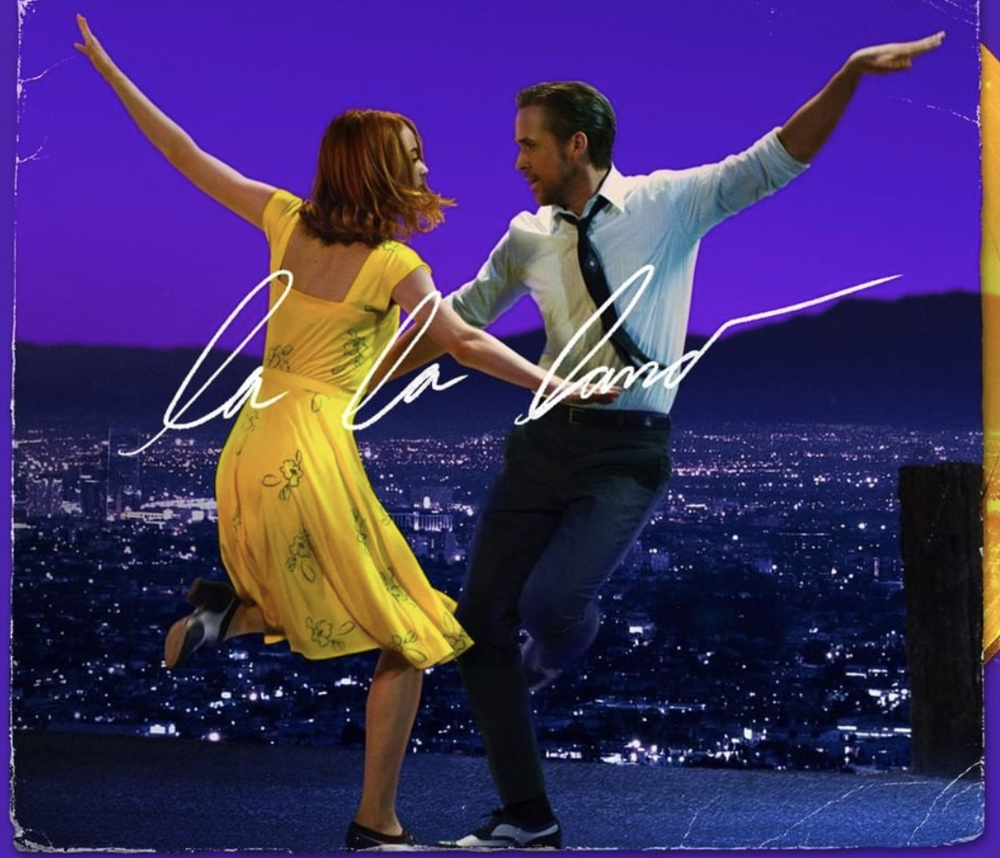
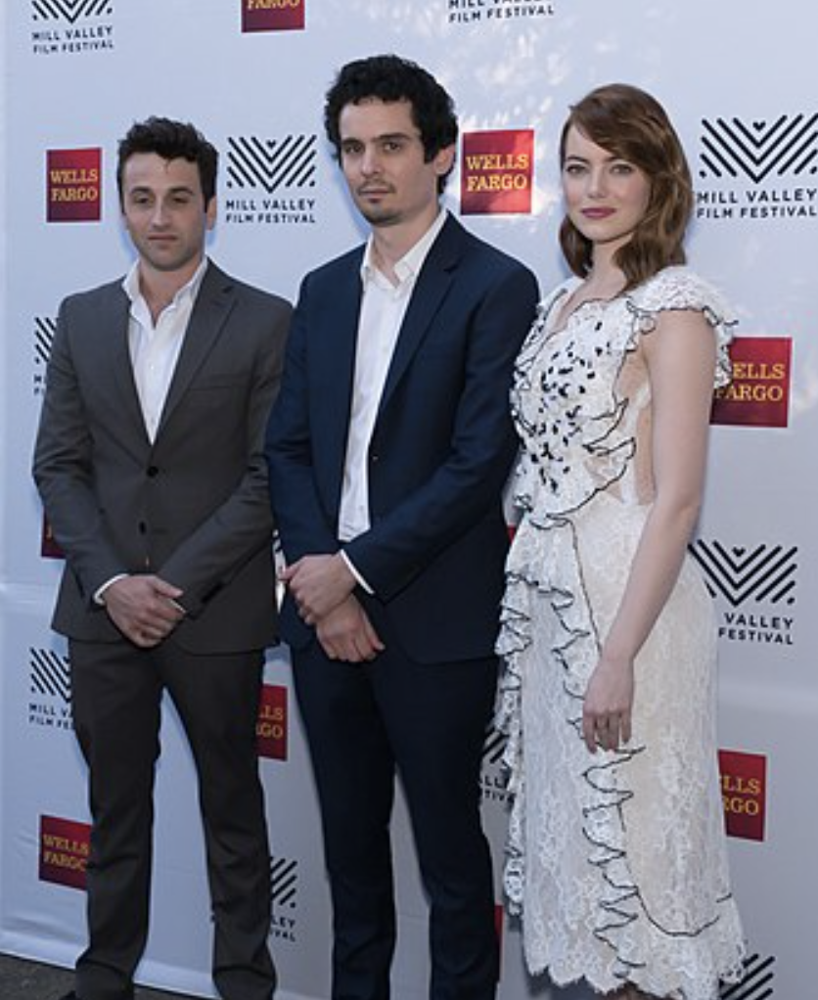

About
La La Land is a 2016 American romantic musical comedy-drama film written and directed by Damien Chazelle. It stars Ryan Gosling and Emma Stone as a struggling jazz pianist and an aspiring actress, respectively, who meet and fall in love while pursuing their dreams in Los Angeles. John Legend, Rosemarie DeWitt, Finn Wittrock, and J. K. Simmons appear in supporting roles.
Having been fond of musicals during his time as a drummer, Chazelle first conceptualized the film alongside Justin Hurwitz while attending Harvard University together. After moving to Los Angeles in 2010, Chazelle penned the script but did not find a studio willing to finance the production without changes to his design. After the success of his film Whiplash (2014), the project was picked up by Summit Entertainment. Miles Teller and Emma Watson were originally slated to star, but after both dropped out Gosling and Stone were cast. Filming took place in Los Angeles between August and September 2015, with the film's score composed by Hurwitz and the dance choreography by Mandy Moore.
Release

The film was originally set for a July 15, 2016, release; however, in March 2016, it was announced the film would be given a limited release starting December 2, 2016, before expanding on December 16, 2016. Chazelle stated that the change was because he felt that the release date was not right for the context of the film, and because he wanted to have a slow rollout beginning with the early fall film festivals. The film was later pushed back a week to December 9, 2016, with the wide release still being planned for December 16, 2016. Lionsgate opened the film in five locations on December 9, 2016, and expanded it to about 200 theaters on December 16, 2016, before going nationwide on December 25, 2016. The film went fully wide on January 6, 2017, with a release into select IMAX theaters a week later.
La La Land was released in the United Kingdom on January 12, 2017. The film was released in the Netherlands on December 22, 2016, and in Australia on December 26, with the rest of the territories planned for a release from mid-January 2017.
Lionsgate released La La Land on Digital HD on April 11, 2017, and Blu-ray and DVD on April 25, 2017.
Award and Reputation
La La Land had its world premiere as the 73rd Venice Film Festival's opening night film on August 31, 2016. The film also screened at the Telluride Film Festival, the Toronto International Film Festival, beginning September 12, 2016, the BFI London Film Festival, the Middleburg Film Festival in late October 2016, the Virginia Film Festival, held at the University of Virginia on November 6, 2016, and the AFI Fest on November 15, 2016.
La La Land premiered at the 73rd Venice International Film Festival on August 31, 2016, and was theatrically released in the United States on December 9, 2016. The film was a commercial success, grossing $448 million worldwide on a production budget of $30 million, and received widespread critical acclaim with particular praise given to Chazelle's screenplay and direction, the performances of Gosling and Stone, score, musical numbers, cinematography, and production design. It went on to receive numerous accolades. It won a record-breaking seven awards from its seven nominations at the 74th Golden Globes and received eleven nominations at the 70th British Academy Film Awards, winning five, including Best Film. The film also received a record-tying fourteen nominations at the 89th Academy Awards, winning in six categories, including Best Actress for Stone and Best Director for Chazelle. In the latter category, Chazelle became the youngest winner at age 32.